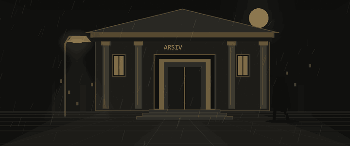
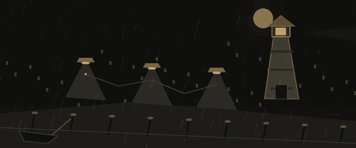

GECE VARDİYASI · BÜRO AÇIKGece uzun.
Gece uzun.
İzler seni bekliyor.
Bir dosya seç. Nokta’yla kodun izini sür.

SORUŞTURMA DOSYALARI02 BÖLÜM
DOSYA 01ARŞİV SOKAĞI

ARŞİV SOKAĞI / C#33 vaka
Programlamanın temelleri
Türler, koşullar, döngüler ve problem çözme.
0 / 33 tamamlandı0%
Arşiv dosyalarını aç
DOSYA 02BELLEK RIHTIMI

BELLEK RIHTIMI / C16 vaka
Bağlı listeler
Düğümler, işaretçiler ve bellek işlemleri.
0 / 16 tamamlandı0%
Bağlantıların izini sür